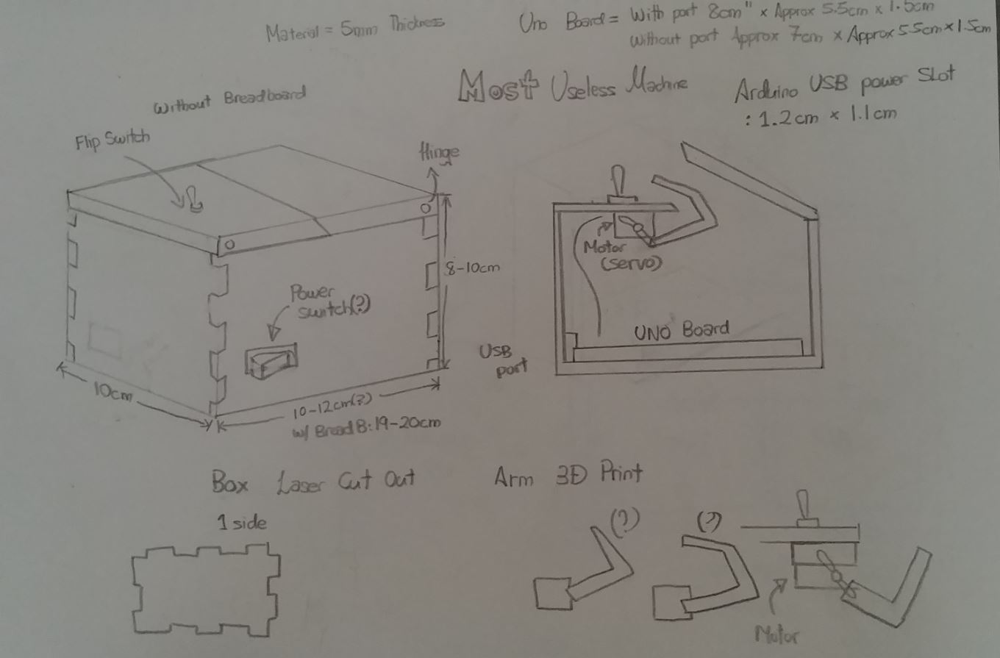
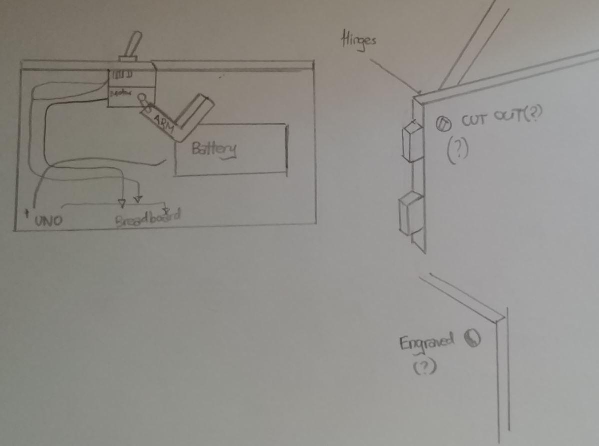

For my final project I wanted to make a useless machine. One where a person flips the switch and a arm comes out only to flip the switch off.
Link to referenceThe site above is where I am going to be referencing my design and code from. The creator of this used a old jewelry box and did some DIY on the cover making it able to split into half and open 2 ways in halves. For my own design, I am going to laser cut out the box and as for the arm, it is going to be 3D printed.
Measuring the dimensions of the Uno board and other components such as the motor size, arm length, battery compartment and possible maybe a breadboard.
 The box would be laser cut out and fitted together without any screws what so ever. Maybe some wood glue. The arm that would be flipping the switch back would be 3D printed using what is known as the overhang.